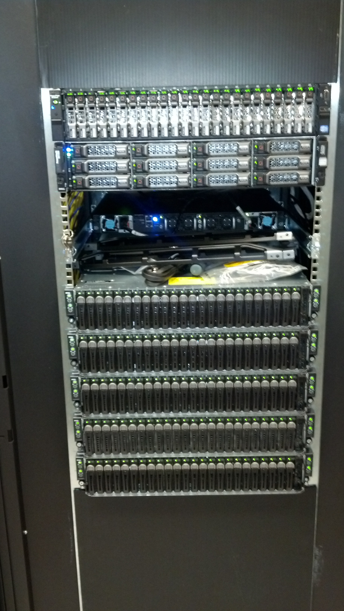
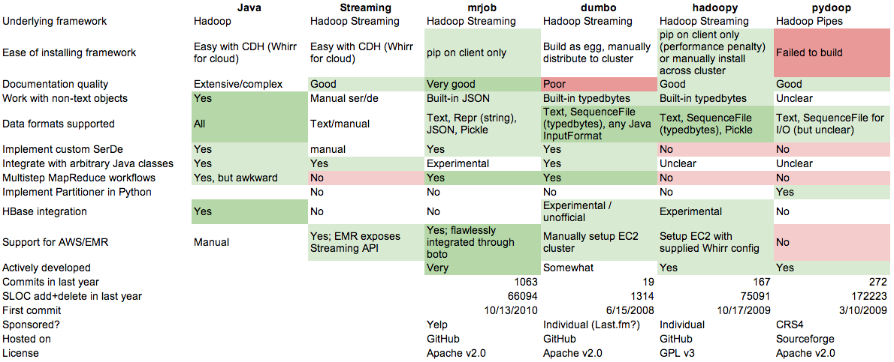
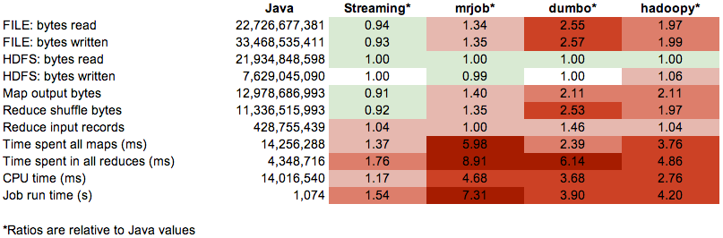

Python in Medical Research
Mark Lowerison | @mloweris Jordan Engbers | @jengbers Paulina Leszczynski | @pleszczy Caitlin Wright | @wrightcj
Outline
$ \sigma^2_w(t)=\omega_1(t)\sigma^2_1(t)+\omega_2(t)\sigma^2_2(t) $ $$ \frac{n!}{k!(n-k)!} = {n \choose k} $$ $$ \sum_{i=1}^{10} t_i $$
You can select from different transitions, like:
Cube -
Page -
Concave -
Zoom -
Linear -
Fade -
None -
Default
Big Data
Map-Reduce Basics
 http://xiaochongzhang.me/blog/?p=338
http://xiaochongzhang.me/blog/?p=338
Python and Map-Reduce
To try out map-reduce, we can implement the algorithm in 20 lines of code...
MapReduce.py
import json
class MapReduce:
def __init__(self):
self.intermediate = {}
self.result = []
def emit_intermediate(self, key, value):
self.intermediate.setdefault(key, [])
self.intermediate[key].append(value)
def emit(self, value):
self.result.append(value)
MapReduce.py
#continued
def execute(self, data, mapper, reducer):
index = 0
for line in data:
index += 1
record = json.loads(line)
mapper(record)
for key in self.intermediate:
reducer(key, self.intermediate[key])
jenc = json.JSONEncoder()
for item in self.result:
print jenc.encode(item)
wordcount.py
def mapper(record):
key = record[0] # key: document identifier
value = record[1] # value: document contents
words = value.split()
for w in words:
mr.emit_intermediate(w, 1)
def reducer(key, list_of_values):
total = 0
for v in list_of_values:
total += v
mr.emit((key, total))
Apache Hadoop
Hadoop provides a reliable shared storage and analysis system based on the Hadoop Distributed File System (HDFS) and the MapReduce algorithm
Trying out Hadoop
Hortonworks SandboxOr...get a cluster!
Python and Hadoop
There are several ways to use Python with Hadoop:
- Streaming (natively supported) - harder!
- Python packages (MrJob, hadoopy, pydoop, dumbo) - slower!
- Secondary access through other libraries (hive, etc)
Python-Hadoop Features
Uri Laserson, Cloudera
Python-Hadoop Performance
Uri Laserson, Cloudera
Custom Events
Additionally custom events can be triggered on a per slide basis by binding to the data-state name.
Reveal.addEventListener( 'customevent', function() {
console.log( '"customevent" has fired' );
} );
Slide Backgrounds
Set data-background="#007777" on a slide to change the full page background to the given color. All CSS color formats are supported.
Image Backgrounds
<section data-background="image.png">Repeated Image Backgrounds
<section data-background="image.png" data-background-repeat="repeat" data-background-size="100px">Background Transitions
Pass reveal.js the backgroundTransition: 'slide' config argument to make backgrounds slide rather than fade.
Background Transition Override
You can override background transitions per slide by using data-background-transition="slide".
Clever Quotes
These guys come in two forms, inline:
“The nice thing about standards is that there are so many to choose from”
and block:
“For years there has been a theory that millions of monkeys typing at random on millions of typewriters would reproduce the entire works of Shakespeare. The Internet has proven this theory to be untrue.”
Pretty Code
function linkify( selector ) {
if( supports3DTransforms ) {
var nodes = document.querySelectorAll( selector );
for( var i = 0, len = nodes.length; i < len; i++ ) {
var node = nodes[i];
if( !node.className ) {
node.className += ' roll';
}
}
}
}
Courtesy of highlight.js.
Intergalactic Interconnections
You can link between slides internally, like this.
Fragmented Views
Hit the next arrow...
... to step through ...
any type- of view
- fragments
Fragment Styles
There's a few styles of fragments, like:
grow
shrink
roll-in
fade-out
highlight-red
highlight-green
highlight-blue
Spectacular image!

Export to PDF
Presentations can be exported to PDF, below is an example that's been uploaded to SlideShare.
Take a Moment
Press b or period on your keyboard to enter the 'paused' mode. This mode is helpful when you want to take distracting slides off the screen during a presentation.